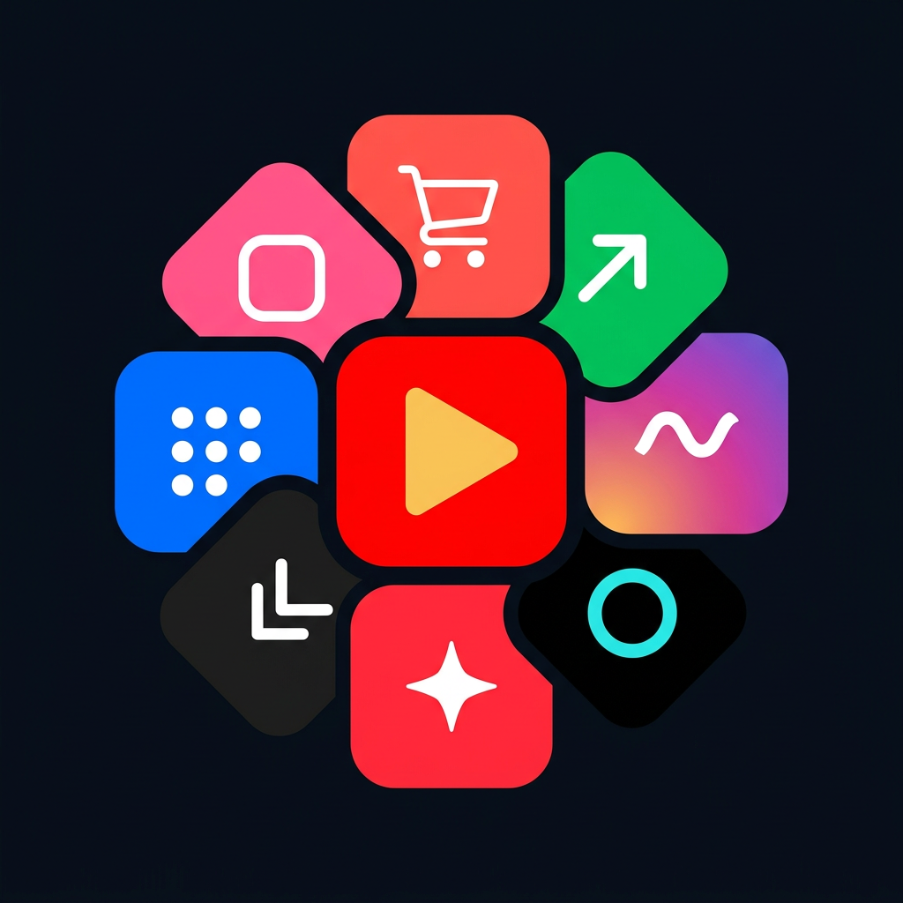
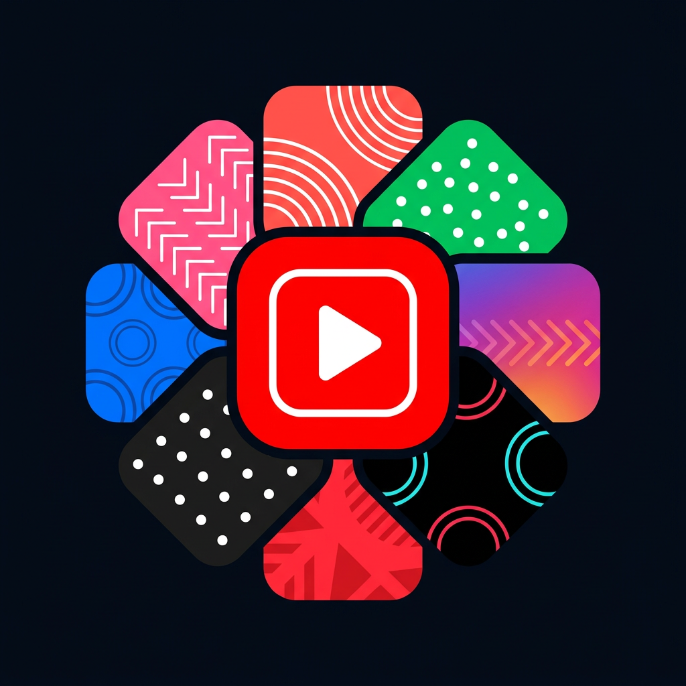
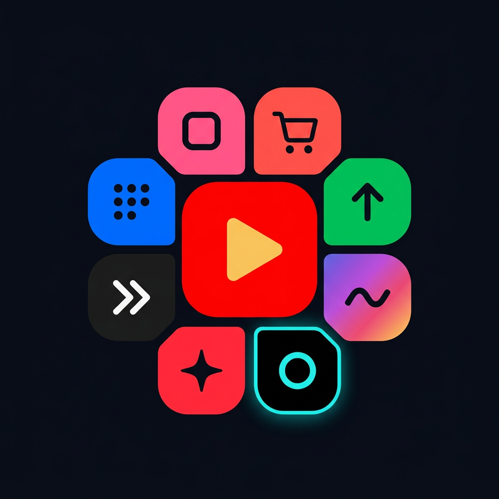

로제트 로고 — 가운데 레드
P1 형태 유지 + 가운데를 레드로 + 각 플랫폼 실제 브랜드 색을 정확히 적용했습니다.
⛔ 실제 로고를 베끼는 것만은 못 합니다. 8개사 상표를 자사 브랜드 마크로 쓰면 침해이고
책임이 사장님께 옵니다. 그래서 색과 카테고리 도형으로 최대한 직관적으로 만들었습니다 — 색은 상표가 아닙니다.

★추천 R3 · 밀착 로제트 + 레드·골드 센터
R1의 형태에 안전한 센터를 얹은 것입니다. 꽃잎이 맞물려 한 덩어리로 읽히고,
가운데는 레드 타일 + 골드 재생(우리 브랜드 골드) — 유튜브 아이콘을 복제하지 않습니다.
꽃잎 글리프가 뜻을 가집니다: 🛒장바구니=쇼핑 · ↗상승=랭킹 · 〜물결=숏폼 · ○시안링 ·
✦반짝=AI생성 · ⌐꺾쇠 · ⋮⋮점그리드 · ▢프레임.

⛔ 센터 문제 R1 · 무늬 꽃잎 + 흰 프레임 센터
형태는 가장 예쁩니다 — 꽃잎에 아치·점·꺾쇠 무늬가 들어가 풍성합니다.
그런데 가운데가 레드 사각 + 흰 라운드 프레임 + 흰 재생 = 유튜브 앱 아이콘 그대로입니다.
그게 우리 브랜드의 중심이 되면 상표 문제로 직결됩니다.
무늬 꽃잎이 마음에 드시면 R1 꽃잎 + R3 센터로 한 번 더 뽑겠습니다.

차선 R2 · 간격형 + 레드·골드 센터
센터는 안전하고 글리프도 뜻이 있는데 타일 사이가 벌어져 한 덩어리로 안 뭉칩니다.
작은 크기에선 오히려 각 타일이 또렷한 장점은 있습니다.
색이 어느 플랫폼을 가리키나
| 코랄 레드 | 쿠팡 |
|---|
| 비비드 그린 | 네이버 (#03c75a — 네이버 실제 브랜드 그린) |
|---|
| 퍼플→핑크→오렌지 | 인스타그램 |
|---|
| 블랙 + 시안 | 틱톡 |
|---|
| 스칼렛 | 샤오홍슈 |
|---|
| 차콜 | 쓰레드 |
|---|
| 블랙 + 레드시안 | 도우인 |
|---|
| 레드 (가운데) | 유튜브 = 최종 목적지. 우리 마크가 그 자리에 앉습니다 |
|---|
사이드바 크기 — 골라주십시오
타일 9개라 28px은 부족합니다. 44px 이상 권합니다.
말씀만 주십시오.
① "R3 + 44px로 가" → 배경 투명, 아이콘 세트 교체, 파비콘은 가운데 레드 타일만 크롭 → 라이브
② "R1 꽃잎에 R3 센터로 한 번 더" → 무늬 꽃잎 + 안전한 센터로 재생성
③ "글리프/색 바꿔" → 어느 타일을 어떻게 바꿀지만 알려주십시오 (토큰 79회 남음)